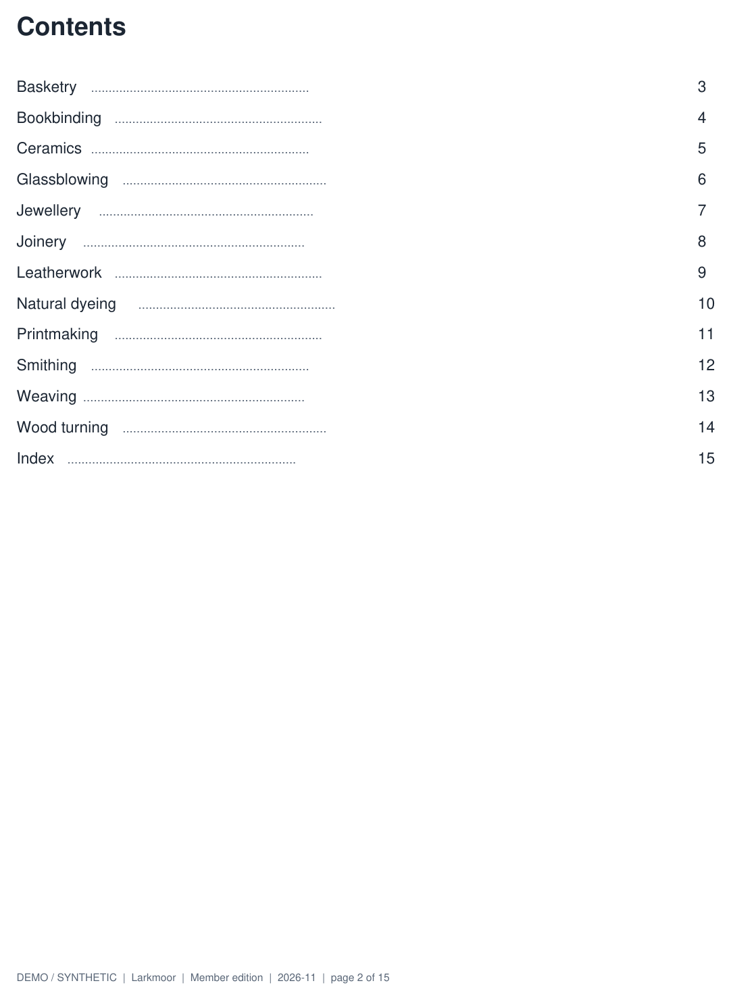
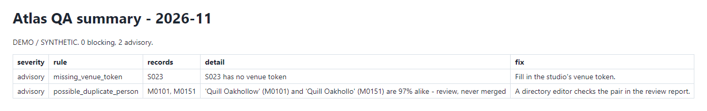

Atlas License Directory
A monthly printed directory that is checked, frozen, printed, verified and published - and can be rolled back.
12 automated tests. Video replayed from a real run (29.3 s).
Imagine your school prints a booklet every month listing every club, its members and where it meets - one booklet for each building, in three versions: one for the public, one for members, one for staff. If a student left the school, or two students got mixed up because they share a locker number, or a page number in the table of contents is wrong, every copy is wrong, and you cannot take printed booklets back. Atlas is that booklet machine for an invented craft coalition: it collects the lists, checks them, waits for an editor to sign off, prints twelve PDFs, re-checks every page like a careful reader, and only then hands them out - keeping last month's booklets in case this month's turns out to be wrong.
Atlas takes four separate source files - members, studios, endorsements and listings - and turns them into twelve PDF directories, one per district per audience. It hashes and counts every file on the way in, cleans values while keeping the originals, and runs a nine-rule registry: six problems block the release, like an expired endorsement or a duplicated member id, and two are only reported. After a named editor approves, the data is frozen into a read-only snapshot and the PDFs are printed from it, each with a linked contents page and index. Then every PDF is opened and checked independently before the set is published in one atomic step. Each stage leaves a checkpoint, so a crash resumes where it stopped, and any earlier month can be restored after its files are re-hashed.
Step by step
members.csv | Each craftsperson: id, name, phone, state (active, suspended, retired), whether they agreed to public listing |
studios.csv | Each studio: id, name, district code, venue reference |
endorsements.csv | Each endorsement: which member, which craft, valid from and to |
listings.csv | Which member appears at which studio in which edition (public, member, inspector) |
published/<month>/*.pdf | Twelve directories: cover, linked contents, one section per craft, alphabetical index |
qa/<month>/qa_summary.html | Every finding with severity, records and fix |
published/<month>/CHANGES.md | Listings added and withdrawn since the previous month |
snapshots/<month>/snapshot.sqlite | The frozen, read-only data the PDFs were printed from |
Predict, then see what the real run did
Every scene of the recorded run. Read what is about to happen, make a prediction, then reveal the actual terminal output. To run it yourself one scene at a time, use the CivicWorks Lab.
Break the data on purpose and watch what happens
Each experiment changed one thing in the real input data and ran the real pipeline beside a normal run. Below are only the lines of output the change made different. In the local Lab the same button runs it live, and you can make your own changes.
Let one craftsperson's endorsement lapse
Member M0001's endorsement is changed to end on 1 October 2026 - before the December edition.
A craftsperson withdraws consent to be listed publicly
Member M0001 still has a listing in the public edition, but their public_opt_in is changed to 0.
Ask the pipeline's database a question
This is the real database a run of this pipeline left behind (atlas.sqlite, 156 KB). It opens in your browser - nothing to install, nothing sent anywhere. Each example teaches one SQL idea; edit it or write your own. Changes stay in your browser's copy.
Every check, why it exists, how to fix it
| rule | severity | why | fix |
|---|---|---|---|
duplicate_member_id | blocking | One id must mean one person; otherwise listings attach to the wrong craftsperson. | Give each person their own member id in the members source. |
missing_endorsement | blocking | Only endorsed craftspeople may be listed. | Add the endorsement or withdraw the listing. |
expired_endorsement | blocking | A directory must not advertise a craftsperson whose endorsement ends before the edition goes out. | Record the renewal, or withdraw the listing for this period. |
invalid_dates | blocking | A date that does not exist (30 February) or ends before it starts cannot be trusted. | Correct the date in the endorsements source. |
unknown_craft | blocking | Every listing is printed under a craft section; an unmapped craft has nowhere to go. | Fix the spelling or add an alias in the craft map. |
orphaned_studio | blocking | A studio in a district that does not exist cannot be placed in any district edition. | Correct the district code in the studios source. |
contradictory_audience | blocking | A person who did not opt in to public listing must not appear in the public edition. | Remove the public placement or record the opt-in. |
missing_venue_token | advisory | Listings print without a venue reference; readers can still find the studio by name. | Fill in the studio's venue token. |
possible_duplicate_person | advisory | Two ids with nearly identical names may be one person entered twice. Never merged automatically. | A directory editor checks the pair in the review report. |
The database, read from its own migrations
Built by applying the project's numbered migration scripts to an empty database. Blue marks a primary key; amber arrows are foreign keys - links the database itself enforces.
source_file
- source_name text pk
- period text pk
- sha256 text
- row_count integer
- columns text
- loaded_at text
district
- district_id text pk
- label text
- unique (label)
craft
- craft_code text pk
- label text
- unique (label)
guild_member
- member_id text pk
- invented_name text
- raw_name text
- phone_token text
- raw_phone text
- active_state text
- public_opt_in integer
studio
- studio_id text pk
- district_id text → district.district_id
- raw_district text
- studio_name text
- venue_token text
endorsement
- endorsement_id text pk
- member_id text → guild_member.member_id
- craft_code text → craft.craft_code
- raw_craft text
- valid_from text
- valid_to text
placement
- placement_id text pk
- member_id text → guild_member.member_id
- studio_id text → studio.studio_id
- edition_code text
- approved integer
- unique (member_id, studio_id, edition_code)
review_candidate
- candidate_id integer pk
- period text
- member_a text
- member_b text
- similarity real
- evidence text
directory_release
- release_id text pk
- period text
- stage text
- snapshot_hash text
- approved_by text
- pdf_count integer
- manifest_hash text
- updated_at text
What it produced in the recorded run




Why it is built this way
Freeze a read-only snapshot before printing
instead of: Printing straight from the working tablesIf someone edits the data while twelve PDFs print, the editions would disagree with each other. A frozen copy guarantees all twelve come from the same approved data, and its hash proves which data that was.
Plan the layout before drawing anything
instead of: Drawing pages and filling in page numbers as you goThe contents page comes first but needs the page numbers of sections that come later. Planning first means every page number is known before page one is drawn - no fixed page assumptions.
Verify the finished PDFs separately from the code that drew them
instead of: Trusting the rendererA bug in the renderer would also be in any check written inside it. Opening the saved file and reading it like a person catches what the renderer got wrong.
Keep raw values beside cleaned ones
instead of: Overwriting with the cleaned valueIf a cleaning rule is wrong, the original is still there to fix it from, and anyone can see what the source actually said.
Exact duplicates collapse; near-duplicate names go to a report
instead of: Merging anything that looks similar'Quill Oakhollow' and 'Quill Oakhollo' may be a typo or two real people. Merging wrongly attaches one person's listings to another; a person must decide.
A rulebook file (rules.yaml) with severity, reason and fix
instead of: Checks scattered through the codeAnyone can read every rule in one place, change a severity without touching code, and see why each rule exists.
What goes wrong, and what happens
| situation | result |
|---|---|
| An endorsement expires before the edition goes out | Blocked: the record and the date are named; nothing is frozen or printed. |
| One member id used by two different people | Blocked: listings would attach to the wrong person. |
| A craft spelled a way the map does not know | Blocked: there is no section to print it in. |
| The machine stops after printing, before checking | Nothing is published. Resume skips the finished stages (their hashes still match) and carries on. |
| A printed PDF is damaged or missing its index | Verification fails and the release stops; last month stays current. |
| This month's directory turns out wrong after release | Rollback re-hashes last month's files and points readers back at them; this month is kept, not deleted. |
Questions it answers
In shortSo all twelve booklets come from exactly the same approved data, even if someone edits the data during printing.
In depthThe snapshot is a read-only SQLite copy taken with the backup API after approval; its SHA-256 is recorded, so every PDF is traceable to one immutable input.
In shortThe computer opens the finished PDF, follows every contents link and checks the page it lands on starts with that section.
In depthverify() reads the saved file with PyMuPDF, follows each GOTO link on page 2 and asserts the target page's text begins with the section title; index links are checked the same way against printed names.
In shortNothing is published. Next time it starts where it stopped and skips the parts it can prove are done.
In depthEach stage writes a checkpoint containing a hash of its outputs; resume skips a stage only if the current hash matches, so altered outputs are regenerated.
In shortThey might be two real people. A wrong merge gives one person's listings to someone else, so a person decides.
In depthFuzzy candidates (SequenceMatcher >= 0.92) are written to review_candidate and raised as an advisory finding; only exact key duplicates collapse.
In shortThe public edition shows only people who agreed to be public; the inspector edition also shows suspended members and endorsement details.
In depthEDITIONS defines states and detail level per audience; placement.edition_code plus a rule that blocks public placements without opt-in.
python start.py # one command: sets everything up and opens the Lab cd atlas-license-directory python -m atlas demo --out build/demo # or run just this demo python -m pytest # and its tests